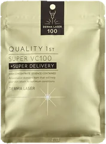
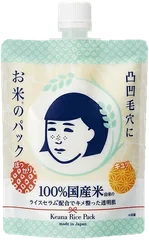
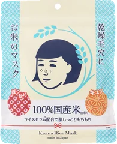
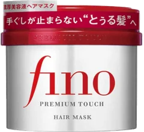
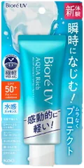

前期2位

ダーマレーザー
スーパーVC100マスク
7枚
¥770税込・出典掲載価格
クチコミの要約
- 3分でいい厚手シート
- 液がひたひたで顎まで包む
- 忙しい朝にパックしたいなら
気になる声重くて顎裏が浮くって声も
販売価格・容量・送料はリンク先でご確認ください
THE COSME EDIT / 2026.09.15
動画で紹介した5品です。ドン・キホーテを運営するPPIHが発表した、訪日客に売れた商品の部門の順位です。
05 ITEMS 動画で紹介した商品
2026春夏はインバウンドヒット賞、2025秋冬は世界が恋した逸品賞の順位です。2026春夏の1位はサプリメントだったので外しました。2025秋冬の部門からは、2026春夏と重ならない商品だけを入れています。
価格は出典掲載時のものです。楽天の現在価格とは異なる場合があります。

ダーマレーザー
7枚
¥770税込・出典掲載価格
クチコミの要約
気になる声重くて顎裏が浮くって声も
販売価格・容量・送料はリンク先でご確認ください

毛穴撫子
170g
¥1,375税込・出典掲載価格
クチコミの要約
気になる声ぼそぼそで伸ばしにくいって声も
販売価格・容量・送料はリンク先でご確認ください

毛穴撫子
10枚
¥715税込・出典掲載価格
クチコミの要約
気になる声アルコールが強いって声も
販売価格・容量・送料はリンク先でご確認ください

フィーノ
230g
¥1,018税込・出典掲載価格
クチコミの要約
気になる声こってり重めって声も
販売価格・容量・送料はリンク先でご確認ください

ビオレUV
70g
¥798税込・出典掲載価格
クチコミの要約
気になる声香りが強く感じる人もいる
販売価格・容量・送料はリンク先でご確認ください
SOURCE & NOTES
集計期間：2026春夏と2025秋冬の発表です。今の売れ筋順ではありません。
お米のパックとお米のマスクは@cosmeに載っている税込価格です。ダーマレーザー、フィーノ、ビオレUVは2026年9月13日に楽天の商品ページで確認した価格です。